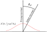

Fast Product Importance Sampling of Environment Maps
Alejandro Conty and Pascal Lecocq
Sony Pictures Imageworks
This talk does not contain nuclear launch codes
Feel free to record
Our topic: Lighting with an environment map
- Photographs of the sky or interiors
- Very common in VFX to integrate CG into live action
- ... but also in animation to get natural lighting
- Some examples below
Jungle scene from Kingsman: Golden Circle. Ⓒ 2017, 20th Century Fox. All rights reserved.
Scene from Smurfs The Movie. Ⓒ 2011, Sony Pictures. All rights reserved.
IBL importance sampling is responsible for focusing on the bright areas and keep low variance. If we disable it ...
... it is horrible!
Motivation
- Old approach: Precomputed 2D CDF tables
- Orientation and view independent
Why going through the trouble?
Isn't simple importance sampling good enough?
Problem 1: sampling the hidden half of the environment
Problem 2: narrow BSDF lobes
Problem 3: multiple hot spots on the environment
We need to avoid samples on the wrong hotspot!
Our Goals
- Draw samples in the relevant IBL × BSDF areas
- Use little extra memory
- We shouldn't keep one importance table for every possible normal orientation
- Easy integration: implemented in the environment sample method
- Low overhead, vectorizable code, SIMD
The Idea
Before rendering
- Divide the sampling table in two levels
- Precompute the lower high resolution level as usual
- Make the upper level a downsized version of the original
The hierarchy

At render time
- Multiply a copy of the upper level by the BSDF
- Sample the result as a CDF to select a patch in original map
- Finally sample the selected patch to get a direction
The product happens in the upper level
We cannot rebuild a big importance table for every shading point, but maybe we can build a 12x12 one
Very few pixels: make the most of them

Using [Clarberg 2008] area preserving sphere parametrization we ensure all pixels cover equal solid angle (although distorted)
Keep a downsized copy of the environment map
This is precomputed and never changes during the render
Evaluate an approximation of the BSDF
We evaluate a conservative approximation of the BSDF after shading
Multiply together to get the final CDF
Finally the product gives us the CDF to select a patch in the original environment map
How expensive is this
- We are evaluating the product at 144 directions
- Generating 576 bytes of CDF size
But production BSDFs are too expensive!
- We need a simple proxy approximation
- Even better if we can use SIMD instructions
BSDF proxy
We make the assumption that all our lobes revolve around four main axes
- Normal direction (diffuse lobes)
- Opposite normal direction (translucent lobes)
- Reflected ray (reflection lobes)
- Refracted ray (refraction lobes)
Our BSDF proxy visually
Our BSDF proxy reduces multiple lobes to single isotropic lobe around each axis (2 diffuses + 2 GGX)
In numbers ...
- 4 floats of accumulated weight
- 2 floats for the reflection/refraction roughnesses
- 1 float for the IOR
We average roughness weighting by each lobe and usually there is only one IOR per surface.
Bump mapping
- The proxy uses only one normal that spawns the four scattering axes
- This will fail if there are BSDF lobes with different bumped normals
- We compensate by expanding the roughness of the divergent lobes
Look at the divergence
- Assume the tangent of the divergence between normals lies at $2 \sigma$ of some distribution of slopes
- Add variance to the lobe's one to simulate convolution
Dealing with GGX
- Undefined variance (or mean)!
- Truncate to preserve 95% of mass
- We found $\sigma^2 = 2\alpha^2$ to fit the truncated variance
- Expanded roughness is $\alpha' = \sqrt{\frac{1}{8}\tan^2\theta_d + \alpha^2}$
When is the proxy created?
- After OSL execution, from the returned list of BSDFs
- BSDFs are called to accumulate into a common proxy
- A BSDF can choose any of the 4 groups and add weight to it
- ... or more than one (ex. diffuse and reflection)
How is the proxy evaluated?
- Diffuse/translucent is a simple dot product
- Refl/refr evaluate a GGX on the incoming direction
- $\frac{\mathrm{weight}}{\pi \alpha^2 (\cos^2\theta + (\sin^2\theta)/\alpha^2)^2}$, easy from the dot product!
- Not the half vector, which would take longer
- We need to transform the roughness to reflection/refraction space
Transforming the roughness
Evaluating the GGX on the scattered direction bypasses the reflection/refraction distortion
The half vector transform introduces scale and strech but the upper-bound is exactly 2.0
We scale the roughness/slopes by 2 (max 1D derivative) => conservative and cheap approximation!
Transforming the roughness
Same approach for the refraction
Use these roughness values
- $\alpha_{rfl} = 2 \alpha$
- $\alpha_{rfr} = \frac{N\cdot \omega_t + \eta\ N\cdot\omega_o}{N\cdot \omega_t}\alpha$
- Same factor result as
Efficient Rendering of Layered Materials using an Atomic Decomposition with Statistical Operators
[Belcour 2018]
We transform roughness after all BSDFs have accumulated to the proxy and before evaluation
Accounting for low resolution
- Bound the cosine of the bounding cone for the pixels in the 12x12 upper level (0.944)
- Subtract this angle when getting cosines from dot products (inexpensive)
Accounting for low resolution
- The resulting evaluation will be conservative, we won't miss a patch under the horizon
Accounting for low resolution
... and will prevent undersampling in lobe falloffs.
But what if I want to use a different resolution?
Over 2 divisions, the bounding angle can be approximated as
$\theta = 4.154 / n - 2.012 / n^2$
where $n$ is the number of divisions, or just
$\cos\theta = \frac{(n - 2)^{3/2}}{(n - 2)^{3/2} + 1.77}$.
Efficient implementation
- Eval works with sines and cosines
- Dot products, sums, multiplications and a few square roots
- We use SSE4.2 to do 4 evals at a time and reduce 144 evals to 36
- But you can do better, with AVX256, AVX512 or GPU!
In a synthetic scene overhead can reach 10% time
In simplified production assets it is down to 2%

In final production performance hit is under 1%.
In motion
Summary
- Practical sampling of product IBL × BSDF
- Two levels importance table
- BSDF proxy
- Low computational overhead, production friendly
- Variance reduction in most production scenes
Limitations
- For light importance sampling only, still MIS based
- We still use the complex BSDF for surface importance sampling
- Fallback for high anisotropy or low roughness cases
- BSDF proxy is an approximation, not devised for shading (see [Belcour2018] for that)
Thanks for listening!
Questions?